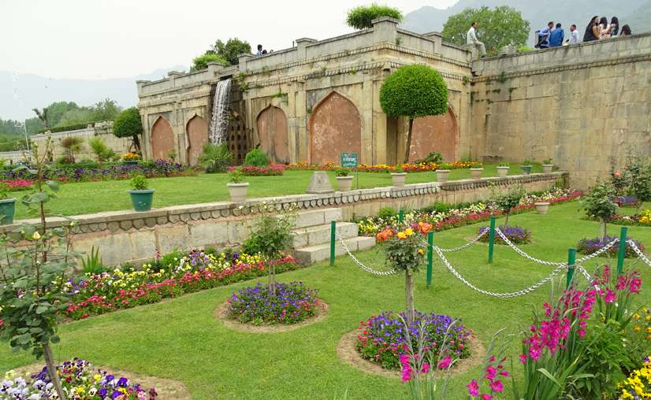

Thus, Nishat Bagh as laid out now is a broad cascade of terraces lined with avenues of chinar and cypress trees, which starts from the lakeshore and reaches up to an artificial façade at the hill end. Rising from the edge of the Dal Lake, it has twelve 12 terraces representing twelve Zodiacal signs. However, it has only two sections, namely the public garden and the private garden for the Zanana or harem vis-à-vis the four sections of the Shalimar Bagh; this difference is attributed to the fact that the latter Bagh catered to the Mughal Emperor, while Nishad Bagh belonged to a man of his court, a noble. There are, however, some similarities with the Shalimar Bagh, such as the polished stone channel and terraces. The source of water supply to the two gardens is the same. Built in an east-west direction, the top terrace has the Zenana garden while the lowest terrace is connected to the Dal Lake.
